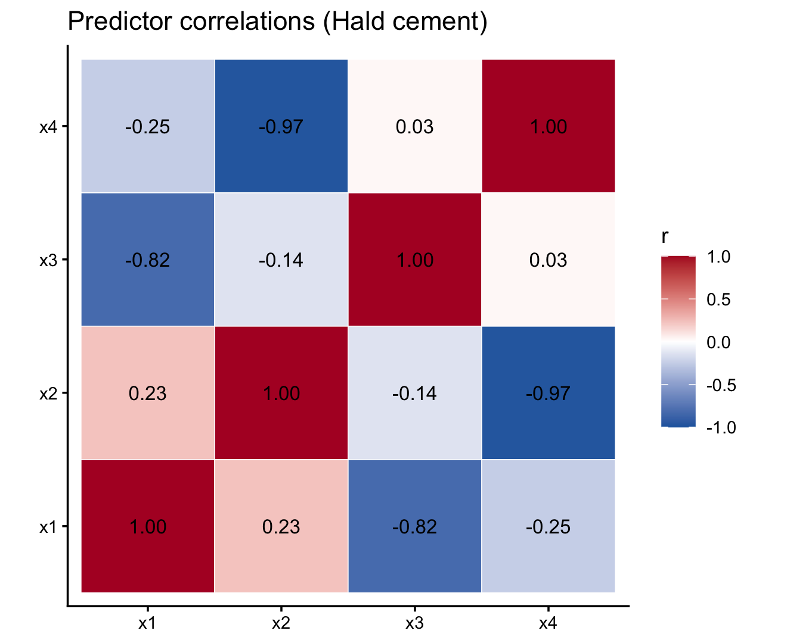

| x1 | x2 | x3 | x4 | y |
|---|---|---|---|---|
| 7 | 26 | 6 | 60 | 78.5 |
| 1 | 29 | 15 | 52 | 74.3 |
| 11 | 56 | 8 | 20 | 104.3 |
| 11 | 31 | 8 | 47 | 87.6 |
| 7 | 52 | 6 | 33 | 95.9 |
| 11 | 55 | 9 | 22 | 109.2 |
Hald cement (heat evolved vs four chemistry predictors) — multicollinearity before the gene simulations.
The data (MASS::cement)
- Outcome
y: heat evolved (calories per gram cement) — left on the original scale
- Predictors
x1–x4: oxide composition — we standardize them (scale()) so slopes are comparable and units do not dominate the fit
Standardize predictors first
hald_scaled[, c("x1", "x2", "x3", "x4")] <- scale(hald[, c("x1", "x2", "x3", "x4")])
# All regressions below use hald_scaled (z-scored x1–x4, original y)- Each \(\hat\beta_j\) is the change in y (heat) per 1 SD increase in \(x_j\), holding other predictors fixed
- Correlations among predictors are unchanged by scaling — but coefficient tables are easier to read
One predictor at a time vs all four together
| predictor | simple_estimate | simple_p | full_estimate | full_p | simple_sig | full_sig |
|---|---|---|---|---|---|---|
| x1 | 10.992711 | 0.004552 | 9.124198 | 0.070822 | yes | no |
| x2 | 12.279477 | 0.000665 | 7.938657 | 0.500901 | yes | no |
| x3 | -8.043437 | 0.059762 | 0.652743 | 0.895923 | no | no |
| x4 | -12.355485 | 0.000576 | -2.411319 | 0.844071 | yes | no |
- Simple fits: x1, x2, x4 significant; x3 borderline
- All four together: no predictor significant at \(\alpha = 0.05\) (x1 borderline) — joint inference breaks down when columns overlap
| term | estimate | std.error | statistic | p.value |
|---|---|---|---|---|
| (Intercept) | 95.4231 | 0.6784 | 140.6589 | 0.0000 |
| x1 | 9.1242 | 4.3810 | 2.0827 | 0.0708 |
| x2 | 7.9387 | 11.2628 | 0.7049 | 0.5009 |
| x3 | 0.6527 | 4.8340 | 0.1350 | 0.8959 |
| x4 | -2.4113 | 11.8682 | -0.2032 | 0.8441 |
Two predictors — y ~ x1 + x2
| term | estimate | std.error | statistic | p.value |
|---|---|---|---|---|
| (Intercept) | 95.4231 | 0.6674 | 142.9779 | 0 |
| x1 | 8.6372 | 0.7135 | 12.1047 | 0 |
| x2 | 10.3052 | 0.7135 | 14.4424 | 0 |
- Both x1 and x2 significant and positive (heat increases with each oxide, holding the other fixed)
Correlations among x1–x4

Strong negative pairs: x2–x4 (\(r \approx -0.97\)), x1–x3 (\(r \approx -0.82\)). x3–x4 are nearly uncorrelated (\(r \approx 0.03\)); x1–x4 weakly negative (\(r \approx -0.25\)).
Takeaway
Signs and p-values can flip when you add or drop correlated columns
Later today: lasso and AIC help navigate this kind of data